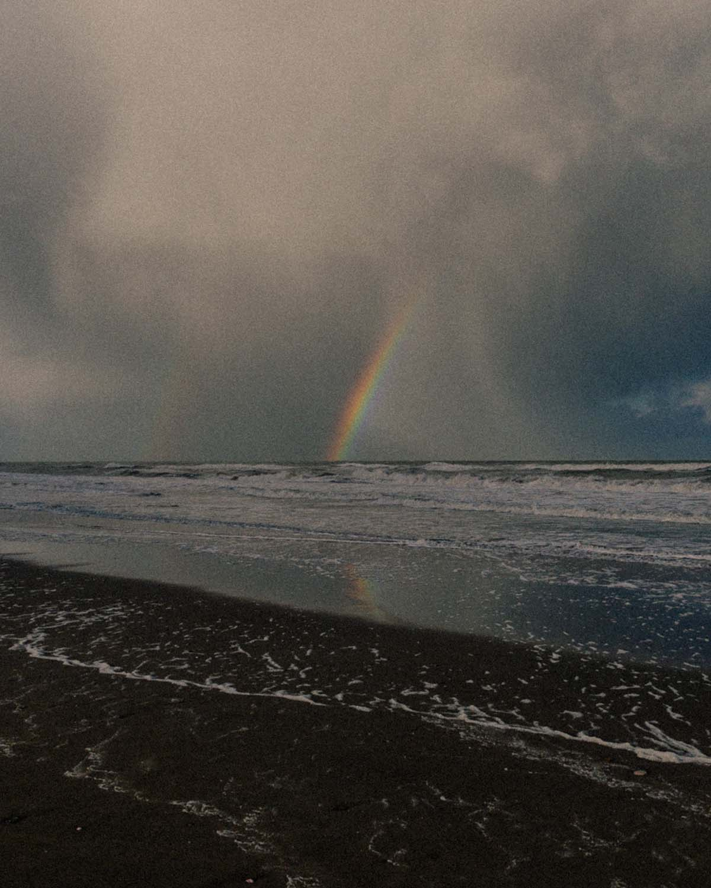
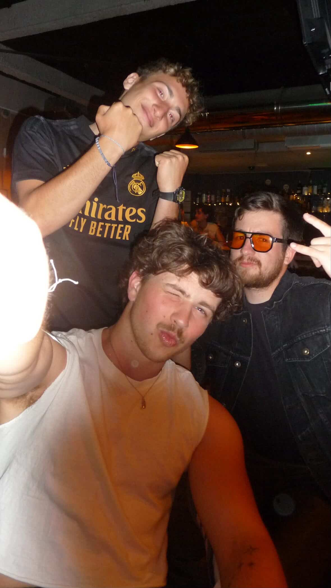
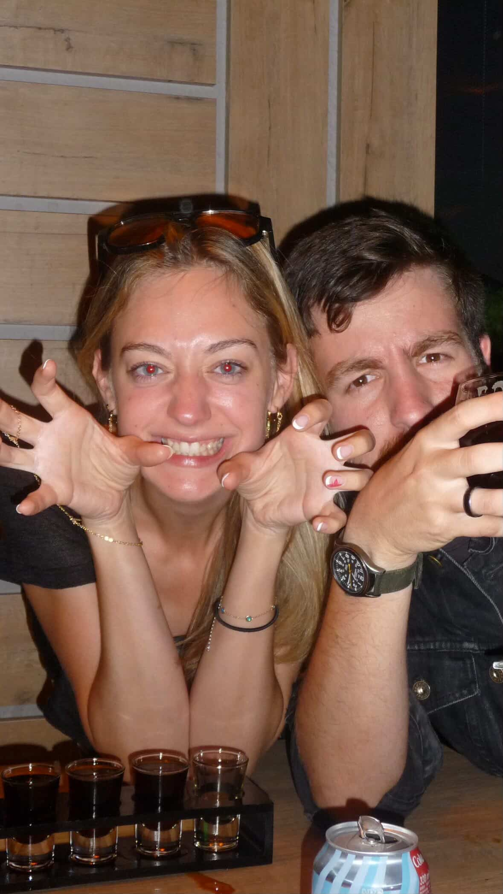
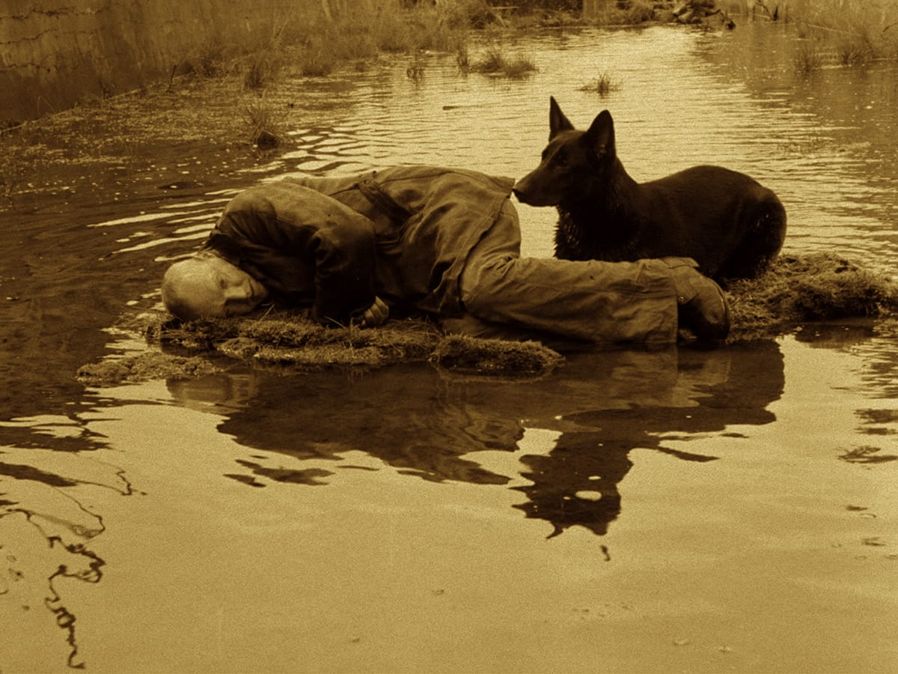

Mar del Plata, 15.09.26
Bonjour mes amis (o bonsoir, no tengo idea a qué hora están leyendo esto). La última vez que les hice una carta así fue en 2024 cuando me fui a Italia y creí que nunca iba a volver y esta vez me encuentro en la misma situación sentimental pero con una enorme diferencia material de la que algunos ya saben y otros se van a enterar al final de esta carta porque necesito mantenerlos en suspenso y entretenidos mientras tanto, pero primero, dos aclaraciones:
- Cuando digo "los amo" o cualquier sinónimo, mi amor excluye a Vicky, obviamente.
- Chino si estás resumiendo esto con Claude te mato.
Una vez resuelto estos asuntos, empiezo
Desde mi retorno a la base central (Gesell) se que no estuve muy activo ni dando muchas señales de vida y eso es porque regresé con una misión divina que consagrar: "Conseguir la Working Holiday para Irlanda". Historia corta: me fue como el orto, no entré ni raspando y no me enteré hasta un mes después. Entonces calculé el plan B: La Working Holiday de Polonia, pero necesitaba demostrar unos €5400 y llegar a Polonia para poder trabajar 6 meses en los peores trabajos por no saber polaco de repente le ganaron a mi coraje aventurero y desistí. El plan C se convirtió en Austria, hasta que un mail de la embajada me advirtió que "no aceptaban efectivo como demostración de fondos, solo divisas en digital con sus origines presentados en transacciones bancarias y recibos de sueldo" porque los austríacos son (aparte de pésimos pintores) gente muy ordenada. Mis opciones se limitaban a Francia o Alemania... ¿Quién poronga querría ir a Francia por voluntad propia? Descartado. Alemania me tentó pero todas las personas que fueron no la estaban pasando muy bien y yo no estaba en el mejor estado emocional para afrontar esa montaña rusa psicológica. Así que hice lo que cualquier persona normal haría: Me tiré un mes en mi cama triste y solo, me dormía a las 7am y me levantaba a las 4pm y no hice otra cosa más que comer porquerías dulces y mirar YouTube... De todas mis grandes ideas, esta no fue una de esas. Tengo varios kilos de más que ahora me van a obligar a hacer ejercicio y lo sufro de solo pensarlo, pero algunos procesos son necesarios para propagar el cambio, supongo al menos. De todas maneras todos tenemos nuestros vicios y el mío es un alfajor torta aguila brownie con chispitas de chocolate. Y hablando de vicios...

Empecemos con que tengo excelentes y no tan excelentes noticias. Primero lo primero: considero que estoy casi que curado con mi desidia de tomarme hasta el agua de los floreros. O sea sigo con una increíble resistencia al alcohol, un sistema digestivo que ruega una muerte piadosa y una capacidad superlativa de hacer desaparecer todo diluido natural etílico (todo lo que marea). Las buenas noticias es que ya no lo hago para hacerme daño ni neutralizar mis pensamientos subversivos, en parte porque ahora le rindo culto a mi nuevo dios el alfajor torta aguila brownie con chispitas de chocolate y en parte porque la ventaja de sufrir la absoluta depresión que puede ser el aislamiento forzoso en Villa Gesell en invierno donde hay 3 días de sol por mes me brindó dos elementos fundamentales: el primero fue déficit de vitamina D y el segundo y más importante aún fue tiempo para meditar. Ya vamos a eso.
¿Se acuerdan cuando dije que iba a cumplir 60 días sin emborracharme y si fallaba reiniciaba el contador de los 60 días? Lo malo es que fallé al día 6 porque cuando fui a Madrid conocí a un grupito de Londres y la noche se puso loca. Me hizo reflexionar cómo funciona el alcohol como motor social, y que quizás le di demasiado lugar como motor de confidencia para animarme a ser más suelto, más relajado, más gracioso pero al fin y al cabo menos yo, o una versión adulterada y recortada de lo que puedo ser.

Eso no quiere decir que dejé de tomar, me sigue costando decir que no y tampoco me limito a tener noches locas de vez en cuando, pero la clave está ahí: de vez en cuando. Darle un propósito a las cosas, a los deberes, los momentos y las celebraciones, pero también entender la razón del descanso y la necesidad de interponer balance a la consciencia activa y a los deseos físicos.
Conclusión: tomar mucho hace mal, que novedad. Pero es algo que solo puede hacerte daño si permitís y das permiso a que te haga daño. Darle espacio a la consciencia de reflexionar en “que estoy haciendo” y “¿Qué motiva a lo que estoy haciendo?” Son guías maravillosas y curanderos fantásticos. Una vez un pelado traumado dijo: Yo no medito, yo hablo con Dios, porque Dios es mi consciencia. En su momento me pareció un delirio místico. Pero ahora lo entiendo, escuchar a la voz que nos guía y vive dentro nuestro. Oír a la mente y al cuerpo en unísono. Igual toda esta reflexión es una excusa para la próxima parte que es mi favorita.
Cuando uno está triste tiene que volver a donde fue feliz. Un lugar especial y familiar, que le devuelve el asombro y la maravilla. Un lugar que entiende, que comprende, donde descansar la cabeza de la incertidumbre y moverse libre con total seguridad de que cada paso es seguro, incluso si uno se adentra en lo desconocido. Para mí ese lugar especial se llama “Stalker” una película rusa de 1979 dirigida por Andrej Tarkovsky. Dura 3 horas, 45 minutos son en sepia y es una de las pelis más lentas y aburridas que existen en el mundo, imaginen que las dos cosas más impresionantes en 3 horas sean ver que llueva y un tarro que se mueve… Es mi película favorita de todos los tiempos.
Para resumirles el sufrimiento de verla (o arruinarles el asombro de verla) Stalker trata sobre un mundo donde Dios abandonó a la humanidad y el proceso del progreso industrial nos envuelve en un sin fin de conflicto y la alienación total del espíritu y la fe (¿Les suena familiar?). Es una obra sobre la fe pero no solo en la experiencia del catolicismo ortodoxo sino en el sacrificio que supone la fe. Dar de nosotros mismos sin saber que hay más allá, rezar y entregarnos en alma y cuerpo hacia aquello que no conocemos, conectar con nuestro instinto más primordial y animal y a su vez creer que podemos trascender más allá de nuestra materia. A veces tengo miedo de que el mundo haya caído en una espiral, que nos hayamos encontrado con que no hay nada más que nuestros instintos primates y que sea nuestra condena reconstruir los errores del pasado en un eterno apogeo sin redención. La guerra, la avaricia, el miedo, el dolor… Los necesitamos, son parte de nosotros, existen porque nosotros existimos y cada vez nos involucramos más en ellos ¿Hay algo más allá que lo humano? ¿Hay perfecto, puro, inmune y trascendental que pueda protegernos y curarnos de nuestros males? Stalker piensa que la respuesta es que si, pero que no es sencilla. Que los milagros existen pero no en las formas que pensamos, que no están siempre para los ojos con los que vemos. En la película Dios no es un una presencia ni un ser material sino que se presenta a través del entorno: vive en la brisa del viento, en el agua, en la luz y las sombras, en el desplazamiento de la arena desde una montaña, en la lluvia dentro de una habitación cerrada, en un perro que habita un lugar donde no se propaga vida. Dios es lo imposible, pero lo imposible no está hecho para nosotros. Es nuestro deber, si lo que deseamos es crecer y trascender, aprender a ver más allá de lo que creemos posible, de lo que nos es carnal y humano, si queremos experimentar el poder de los milagros en el sentido de la fe, de poder ser más y mejores como personas, como animales, como energía viva y en movimiento.

Esta última vez no solo vi Stalker, sino también The Sacrifice (donde un hombre adinerado sacrifica todos sus bienes a la Santa María para salvar al mundo de la tercera guerra mundial) y The Mirror (una película surrealista sobre la infancia del director que es un reflejo de la transformación humana con los procesos de la industrialización en Rusia). Quedé bastante trastornadito, pero en un buen sentido. Mi percepción sobre la vida, la naturaleza y sobre todo sobre el sentido natural de la moral y el deber cambió bastante y ahora creo que mis ojos están más abiertos a la idea de que lo imposible no es una fijación sino limitaciones de la percepción.


Tengo muchas cosas que me dejo afuera pero no quiero que se me haga súper larga la carta porque la última vez que intenté escribir una llegué a las 17 páginas en A4 y nunca la terminé así que vamos a pasar a la parte más importante
¿Ven esa fecha? Esa es la fecha exacta de lo que parecía que no iba a llegar nunca. Y llegó, y yo no me doy cuenta de que lo tengo. Es una sensación muy extraña, porque siempre creí que iba a llorar de la felicidad o que me iba a dar un brote psicótico el día que lo tuviese pero sin embargo el efecto fue muy diferente. No caigo, no soy consciente de que es mío, de que mi superioridad contra los putos españoles no es solo moral e intelectual sino también legal (juro que los odio). Fue muy inesperado porque la pasó así

me despierto una mañana (eran las 13:00) en la casa de Pedro, el se fue a trabajar muy temprano y yo me quedé acostado en la cama con su gatita Kitty mirando al techo preguntandome "¿Qué hago? No tengo plan, ni mapa, ni proyecto... Realmente no se hacia donde dirigirme" Pero no lo pensaba en una forma material o pragmática sino en una forma íntima, como si mi consciencia se encontrase sin ningún rumbo por primera vez. Mi idea fue conseguir un buen laburo y vivir en Caba por un tiempo pero no era algo que del todo me pusiese contento. En ese momento agarro el teléfono para ver la hora y había un mail del comune de Trieste y yo no lo podía creer, con la cabeza completamente negada, me levanté hasta la computadora para ver en grande el email porque pensaba que se trataba de un error y ahí estaba. Mi aggiornamento estaba terminado. Así que como seguía en completa negación entro a la página donde se piden los pasaportes para llevarme la desilusión de esperar 6 meses y cuando pido el turno me lo dan en 2 semanas. Nada tenía sentido (lo digo como buena expresión). Lo que parecía lejano y perdido de repente estaba ya entre mis manos y el largo y aburrido tiempo que me sobraba para darle vueltas a todo lo que tenía pendiente de planear tenía que ejecutarse YA.
Y entonces… ¿Ahora qué? Si ustedes no saben responder menos sabía yo en ese momento. Pero tan conmocionado y después de mucho debate interno (y una videollamada con el Chino que pasó en algún punto de todo este capítulo) decidí que es el mejor momento para volver a la aventura, y esta vez empezando por un lugar que me hace muy feliz ¡Me voy a Irlanda! Tengo fecha para finales de octubre, no tengo idea de qué voy a hacer ni dónde voy a vivir pero es algo a lo que creo que ya todos estamos acostumbrados porque la vida es impredecible y nos pone trabas y sorpresas sin pedirlas ni esperarlas. Y si estás leyendo esto y tu posición actual es Andorra tengo buenas noticias: voy a ir a verlos unos días antes de arrancar la Odisea. Así que resérvense el 1/10 celebrar
Esta es la parte más difícil porque solo se comunicarme a través del humor pero puedo intentar ser agradecido con todos ustedes una vez en la vida.
Me maravilla pensar en que allá a donde voy siempre hice amigos increíbles que me acompañan incluso cuando no estamos en un mismo lugar, o no hablamos por mucho tiempo, o no sabemos qué es de nuestras vidas pero aún así seguimos conectados por un vínculo hermoso construido con amor. Y yo agradezco ese amor que comparto con todos ustedes, mi vida no sería lo que es sin ustedes porque no tendría tantas anécdotas increíbles ni tantas experiencias extraordinarias si no nos hubiésemos conocido. Siempre pienso en ustedes, viven en mi memoria y en mi alma por igual y siempre pienso con añoro como hicieron que mi experiencia de vida sea tan grata, y también en todo lo que viene más adelante y pensar en que nos espera más allá. Los quiero mucho. A algunos los voy a ver pronto, a otros, solo les va a llegar esta carta. Pero se las envío como un símbolo de amor. Me dejo muchas cosas por contarles pero no quiero hacer la carta súper larga. Ya habrá tiempo de contarles todo en persona.
Adiós idiotas.
Tomi.


Puras fotos de joda, nunca algo decente. Se que no metí a todos en las fotos pero ya mucho trabajo fue programar todo esto. Tenía planeado enviarles la carta en Agosto, pero la vida nos suelta muchas sorpresas. Los amo.